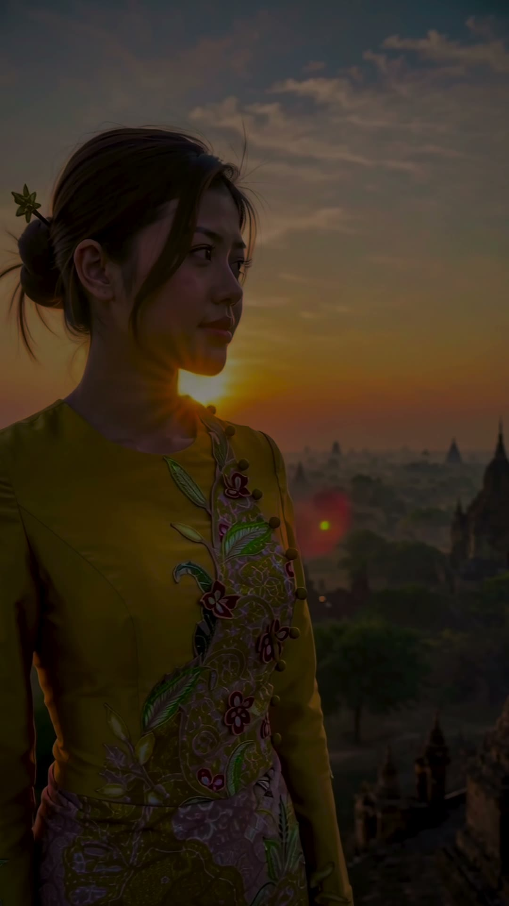
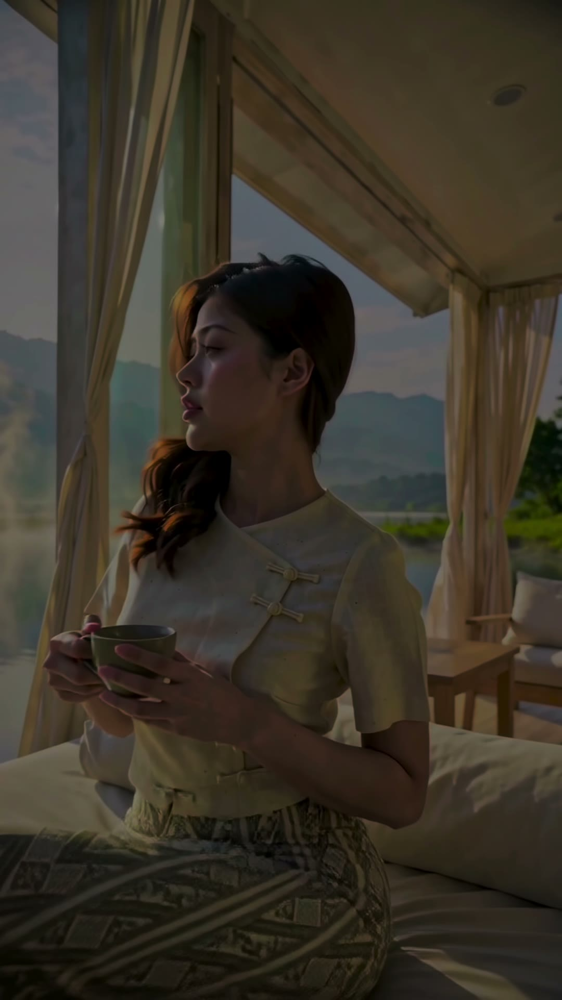
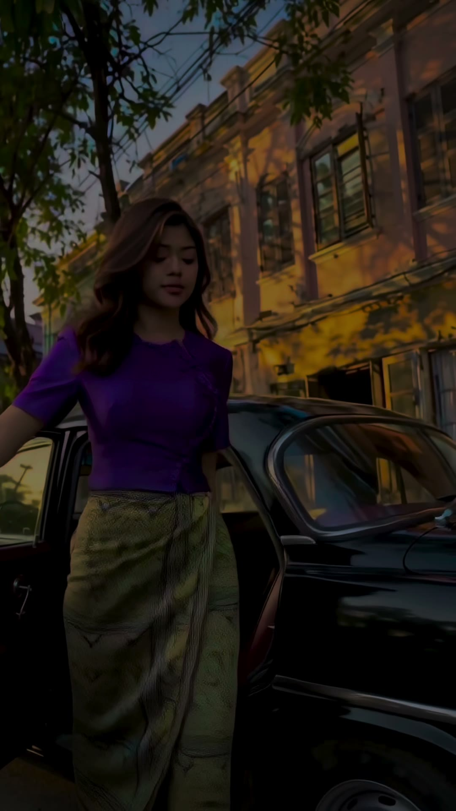
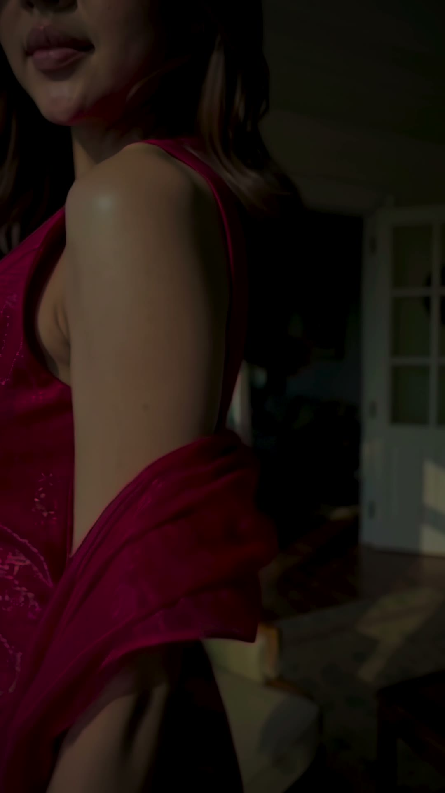
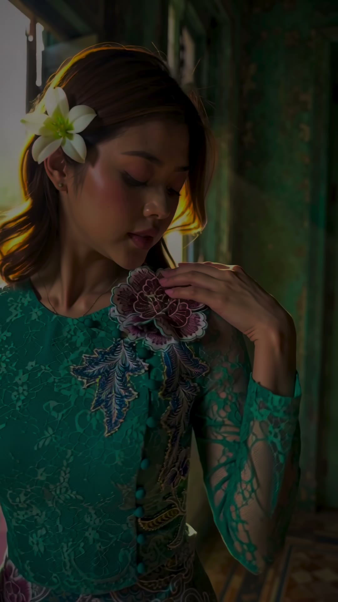
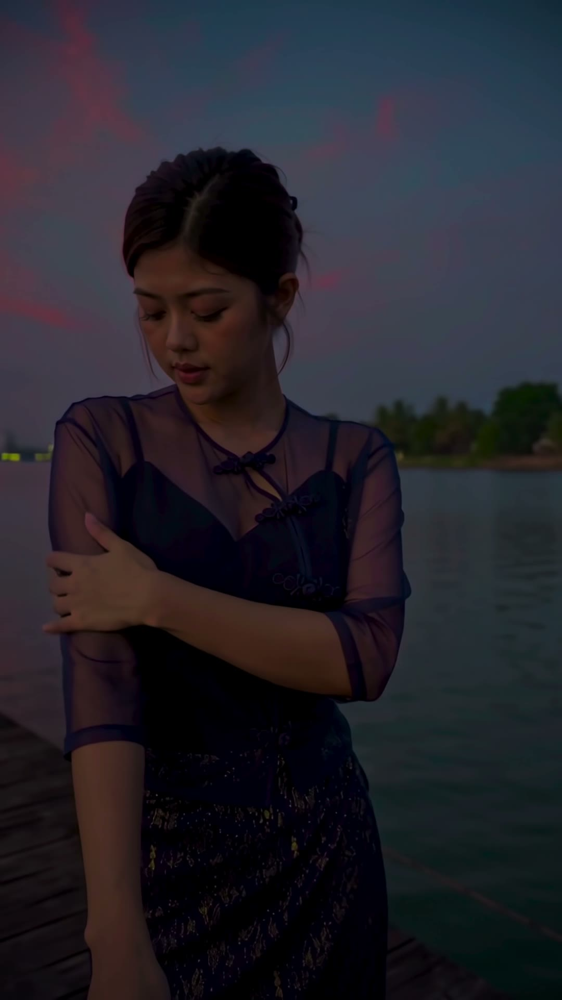
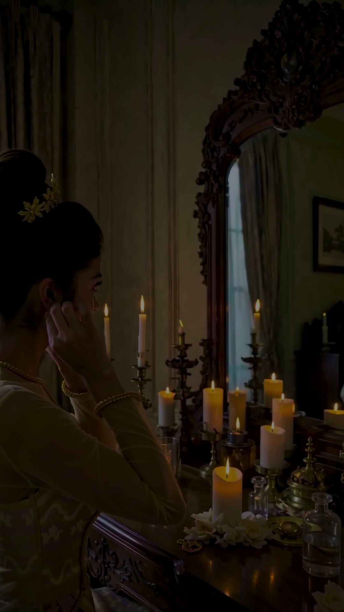

A couture film in true HDR, made without a camera
Eight looks, eight locations across Myanmar, and a studio pipeline built to make generated footage hold up on the brightest phone screens.
Best viewed on an HDR screen: iPhone, iPad or a recent Mac in Safari, or Chrome on an HDR display. Other screens get a standard-range version automatically. The photos below are HDR stills taken from the same cut.


Myanmar Glam makes modern couture from traditional Burmese dress: the fitted eingyi blouse, the wrapped htamein, hand-embroidered silk. For their 2026 collection they wanted a film that looks like a location campaign shot in Bagan, Yangon and Inle Lake, and that plays in real HDR on a phone.
There was no location shoot. The film was made end to end in a private generative pipeline: our own tooling, open-weight models we have tuned and directed for this kind of work, and a render farm that scales from a single workstation to rented datacenter GPUs on demand. An AI operator ran the machine room; the art direction stayed human.
The brief
- Eight looks, each with its own place and light: a pagoda terrace at dawn, a colonial street, a sunlit balcony, a lamp-lit bar, a candlelit vanity, a jetty at dusk, an old teak corridor, a lake pavilion.
- Vertical, because the film lives on phones.
- True HDR: Dolby Vision for iPhone, HLG everywhere else.
- The clothes are the product. Cut, closures, embroidery and the way silk moves all have to be right.
Garments first
Generative video is good at mood and bad at tailoring. Left alone it invents seams, zippers and buttons where the real garment has none, and it borrows details from whatever surrounds the reference photo. We built a garment-reference stage that teaches the system each outfit from every side that matters, and a check that flags any take where the construction drifts. After that, the clothes stopped surprising us.



Directing light, not describing faces
The fastest way to make generated people look artificial is to over-describe them. Our early takes had the plastic skin and flat frontal light that give AI footage away. The fix was a directing method rather than more adjectives: the model's identity is carried by reference, and every scene is lit the way a cinematographer would light it, with a named source, a direction, and shadow on the far side of the face.
Every change was proven on fast, cheap preview renders before a single full-quality take was queued. That discipline saved more compute than any optimisation.
A farm that scales on demand
The pipeline runs on our own job dispatcher. It queues work across a local workstation and short-lived cloud GPUs, syncs the model stack to each machine on arrival, ranks jobs by priority, and shuts machines down the moment they go idle. A full take that needs several minutes locally comes back in about a minute and a half in the cloud. Across the whole production the rented compute cost less than a restaurant lunch.
Real HDR from generated footage
Generated video comes out in standard range with a baked-in look: crushed shadows, clipped highlights, pushed colour. Grading it only exaggerates those problems. Our pipeline reconstructs the missing dynamic range into a grading-grade log master, so lamps, candles and a setting sun keep their brightness and detail instead of clipping to white.
From that master each look gets its own grade, the footage is smoothed to a higher frame rate, and the cut is delivered as Dolby Vision with per-shot brightness metadata, plus HLG for everything else.
We learned to protect the source. Every processing step that wasn't asked for showed up somewhere in the fabric.


Edit and score
The showcase is cut on the beat, with cuts snapped to the real rhythm of the track. The music is original and generated in-house. The verticals follow what works on social: a hook in the first two seconds, a cut on every bar, and a steady build to the end card.
By the numbers
- Several hundred generated takes, from cheap previews to finals.
- Around thirty GPU hours across a workstation and on-demand cloud GPUs.
- Three days from the first pipeline commit to the first native HDR deliveries.
- One art director.
What we'd tell anyone attempting this
- Prove the look cheaply, then scale.
- Show the system what it gets wrong, rather than describing it harder.
- Light the scene; don't describe the face.
- Protect the source. Every unrequested processing step costs you somewhere.
- Check one clip before you batch fifty.
- Keep every take re-runnable, with its full setup, so a good idea is never lost.
The film exists as a showcase cut and short vertical cuts for social, all in Dolby Vision and HLG. Watch it on an iPhone with the brightness up; the candle and dusk scenes are where the HDR shows.
Made with a private generative video and HDR pipeline, our own render-farm tooling, and an AI operator. Hardware: one workstation plus on-demand cloud GPUs.